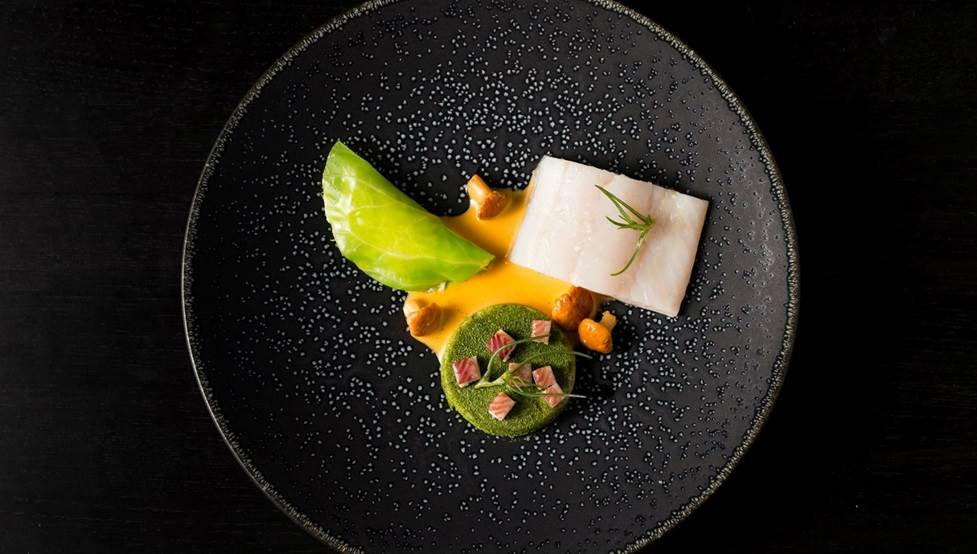

Whether you’re staying for a day or a month, find cheap hostels and hotels in Amsterdam that mix cool, contemporary design and historical charm. 
Best Dutch food restaurants
Beyond the windmills and tulips the Netherlands has another cultural wonder to experience: its cuisine.
Amsterdam's hidden gems
From secret garden cafes and obscure music venues to rooftop bars and a museum in an underground bank vault, here’s our round-up of the city’s best-hidden gems.